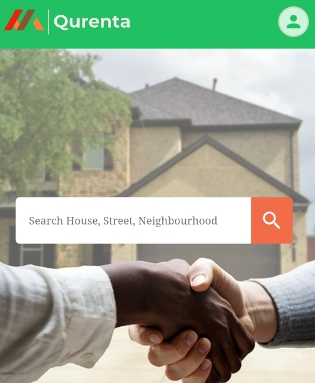
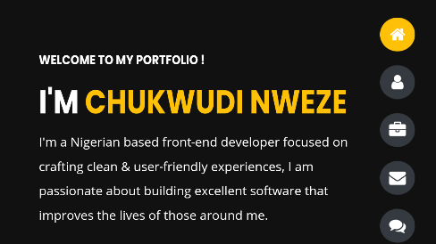

my portfolio

QURENT IS A WEBSITE FOR PROPERTY LISTING
(HTML, CSS, REACT, MATERIAL UI)
I am a developer who learns quickly by building real projects.
I don't just create landing pages; I build full web app that solves real life problem.
It took me knowing someone who knows someone before I was able to find an agent to assist me in my search for a single room when I got my jumior developer role back in Nsukka.
As a developer, learning is continous, I will Continue to refactor as well as add new features especially whenever I learnt a new concept in react
(HTML, CSS, REACT, MATERIAL UI)
I am a developer who learns quickly by building real projects.
I don't just create landing pages; I build full web app that solves real life problem.
It took me knowing someone who knows someone before I was able to find an agent to assist me in my search for a single room when I got my jumior developer role back in Nsukka.
As a developer, learning is continous, I will Continue to refactor as well as add new features especially whenever I learnt a new concept in react

EDFREIGHT IS A WEBSITE THAT WILL LINK CUSTOMERS DIRECT TO
FARMERS WITH JUST A CLICK.
This project came up after I went for a tech conference in Benue State Nigeria. There in Benue, I discovered that agricultural products was at low-cost, perishable goods being rotten and wasting away due to low in demand within the state.
It was reported across local media in 2019 that Nigeria lost $15 billion on tomatoe alone. Persishable goods in this state has been from farm to waste bin due to low in demand.
Constrast to this, there are other parts of Nigeria like in Lagos for example where agricultural products are substantially costly due to high demand in the state.
Now, to solve this problem, edfreight will link customers in area of high demands direct to verified farmers in our platform. Edfreight will in the meantime process transactions bewteen customers and farmers and even deliver goods direct to your doorstep.
As you navigate through the site, you'll notice, as a good front-end engineer, I took time to consider both the UI/UX for easier navigation and experience.
This project came up after I went for a tech conference in Benue State Nigeria. There in Benue, I discovered that agricultural products was at low-cost, perishable goods being rotten and wasting away due to low in demand within the state.
It was reported across local media in 2019 that Nigeria lost $15 billion on tomatoe alone. Persishable goods in this state has been from farm to waste bin due to low in demand.
Constrast to this, there are other parts of Nigeria like in Lagos for example where agricultural products are substantially costly due to high demand in the state.
Now, to solve this problem, edfreight will link customers in area of high demands direct to verified farmers in our platform. Edfreight will in the meantime process transactions bewteen customers and farmers and even deliver goods direct to your doorstep.
As you navigate through the site, you'll notice, as a good front-end engineer, I took time to consider both the UI/UX for easier navigation and experience.

NUTRIFOOD IS A WEBSITE CONNECTING CUSTOMERS TO VARIOUS FOOD
VENDORS
I'am from a place where there are numerious food vendors with 99.9% of these vendors running their daily business offline. A place where you must step out of your house, office etc just to get a taste of that your favourite food.
With this project, you'll only be a click away from buying your favourite food from the best vendors in town.
With the introduction of vendor's star rating by customers in the platform, new users would be able to pick the best vendors
As always, I'm a front-end developer who builds to make the life of people around me confortable taking UI/UX into consideration.
I'am from a place where there are numerious food vendors with 99.9% of these vendors running their daily business offline. A place where you must step out of your house, office etc just to get a taste of that your favourite food.
With this project, you'll only be a click away from buying your favourite food from the best vendors in town.
With the introduction of vendor's star rating by customers in the platform, new users would be able to pick the best vendors
As always, I'm a front-end developer who builds to make the life of people around me confortable taking UI/UX into consideration.

MY PORTFOLIO WEBSITE
You are currently navigating through my portfolio website right now, I added it here to remind you it's part of the project I have used the tools I learnt so far to buld.
As always, I built this while putting UI/UX into consideration for maximum client side experience.
You are currently navigating through my portfolio website right now, I added it here to remind you it's part of the project I have used the tools I learnt so far to buld.
As always, I built this while putting UI/UX into consideration for maximum client side experience.